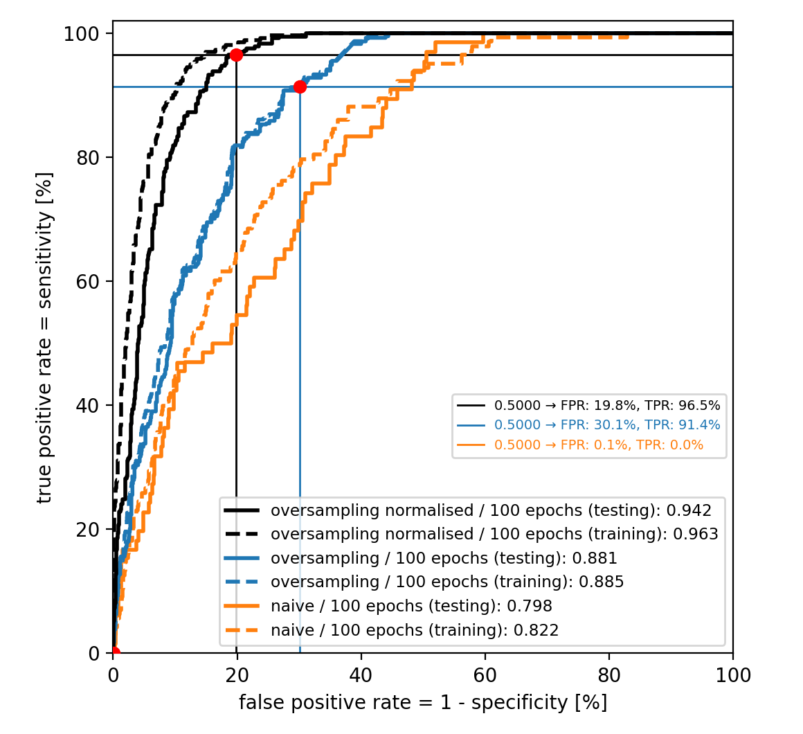
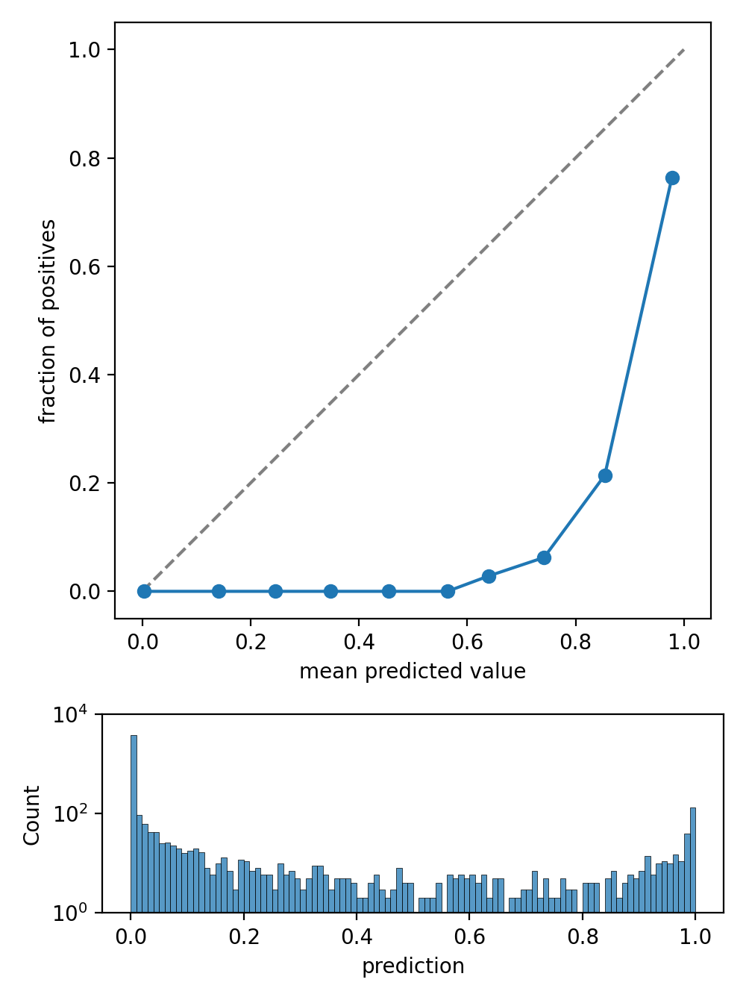
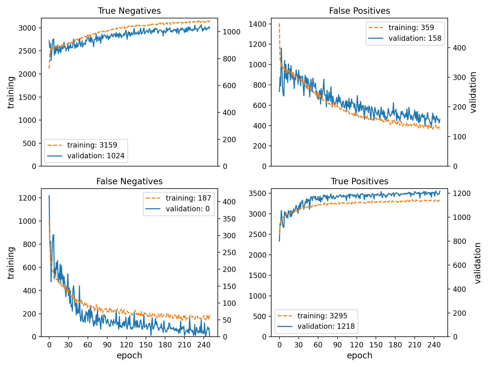
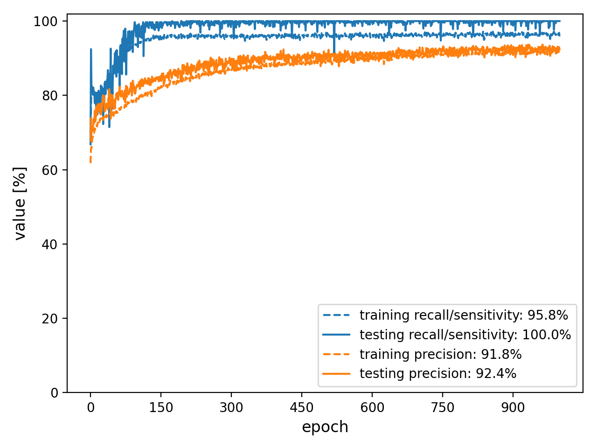

spellbook.train¶
Functions for model training and validation
Classes:
|
Callback that intermittently saves the full model during training |
|
Plot containing Receiver Operator Characteristic (ROC) curves and working points (WP) |
Functions:
|
Apply threshold to calculate the labels from the predictions |
|
Todo write docstring for spellbook.train.plot_calibration_curve |
|
Plot the timeline of training metrics |
|
Convenience function for plotting binary classification metrics |
-
class
spellbook.train.ModelSavingCallback(foldername='model', step=10)[source]¶ Callback that intermittently saves the full model during training
The model is saved as a folder intermittently in configurable steps during training as well as at the end of the training. The foldername is kept unchanged as training goes on, thus always replacing the last/old model with the current/new state.
Methods:
__init__([foldername, step])Callback that intermittently saves the full model during training
on_epoch_end(epoch, logs)Called at the end of every epoch: Save the model every self.step epochs
on_train_end(logs)Called at the end of the training: Save the model
-
__init__(foldername='model', step=10)[source]¶ Callback that intermittently saves the full model during training
-
on_epoch_end(epoch, logs)[source]¶ Called at the end of every epoch: Save the model every self.step epochs
-
on_train_end(logs)[source]¶ Called at the end of the training: Save the model
- Parameters
logs (dict) – Currently the output of the last call to
on_epoch_end()is passed to this argument for this method but that may change in the future.- Return type
-
-
class
spellbook.train.ROCPlot[source]¶ Plot containing Receiver Operator Characteristic (ROC) curves and working points (WP)
Methods:
__iadd__(other)The
+=operator__init__()Initialize self.
add_curve(name, labels, predictions[, plot_args])Add a ROC curve
draw_WP(WP[, line, linestyle, linecolor, …])Draw one or more working points and indicate their classifier thresholds as well as true positive and false positive rates
get_WP(name[, threshold, FPR, TPR, method])Find working point(s) at specified classifier threshold(s), TPR(s) or FPR(s)
Get the labels / texts for the ROC curves to be shown in the legend
Get the lines representing the ROC curves to be shown in the legend
pickle_load([filename])Unpickle and load an instance/object from a file
pickle_save([filename])Pickle this instance/object and save it to a file
plot()Plot one or more ROC curves and working points to a figure object
remove_curve(name)Remove a ROC curve
rename_curve(old_name, new_name)Change the name of a ROC curve
-
add_curve(name, labels, predictions, plot_args={})[source]¶ Add a ROC curve
Internally it uses
sklearn.metrics.roc_auc_score()to calculate the ROC curve from the true labels and the predictions / classifier outputs.- Parameters
name (str) – The name of the ROC curve
labels ([float] / numpy.ndarray(ndim=1)) – The target labels for the datapoints
predictions ([float] / numpy.ndarray(ndim=1)) – The sigmoid- activated predictions for the datapoints. Note that not the predicted labels but rather the sigmoid-activated predictions should be used so that by scanning different thresholds the different true positive / false positive rates can be determined.
plot_args (dict) – Arguments to be passed to
matplotlib.axes.Axes.plot()
- Return type
-
draw_WP(WP, line=True, linestyle='-', linecolor='C0', info=None, highlight=None)[source]¶ Draw one or more working points and indicate their classifier thresholds as well as true positive and false positive rates
- Parameters
WP (dict / [dict]) – One or more working points as returned by
get_WP()linestyle (str / [str], optional) – Linestyle(s) for drawing the horizontal and vertical lines designating the working point(s)
info (bool / [int], optional) – Whether or not the parameters of the WP(s) should be shown on the graph. If
NoneorTrue, then all WPs are included. IfFalseor[], none are given. If a list of integers is given, then the WPs with the corresponding indices are shown.highlight (bool / int, optional) – Whether or not and which WP and its parameters should be highlighted. If a single WP is given, then highlight should be a bool. If multiple WPs are given, it should be an integer specifying the index of the WP to highlight.
Some examples of how to calculate and draw working points are given here in
get_WP().- Return type
-
get_WP(name, threshold=None, FPR=None, TPR=None, method='interpolate')[source]¶ Find working point(s) at specified classifier threshold(s), TPR(s) or FPR(s)
Either the classifier threshold, the TPR or the FPR parameter can be specified to determine one or more matching working points (WP), but not more than one of the three at the same time.
- Parameters
name (str) – Name of the curve from which to determine the WP(s)
threshold (float / [float]) – Threshold/cut value on the classifier’s sigmoid-activated output to separate the two classes
FPR (float / [float]) – Target FPR(s) to match
TPR (float / [float]) – Target TPR(s) to match
method (
interpolate/nearest) –Method for determining the working point(s)
interpolate: find the two points that enclose the target value and interpolate linearly between themnearest: find the point that is nearest to the target value
- Returns
If threshold/FPR/TPR is a scalar, then a dict containing the matching WP with its threshold, FPR and TPR is returned. If threshold/FPR/TPR is a list, then a list of dicts is returned, with each entry in the list corresponding to one WP.
- Return type
dict / [dict]
Example
Get a single working point by specifying a classifier threshold and draw it
roc = sb.train.ROCPlot() roc.add_curve('1000 epochs (testing)', test_labels, test_predictions.numpy(), plot_args = dict(color='C0', linestyle='-')) WP = roc.get_WP('1000 epochs (testing)', threshold=0.5) roc.draw_WP(WP, linecolor='C0') fig = roc.plot() sb.plot.save(fig, 'roc.png')
Get multiple working points by specifying FPRs and TPRs and draw them
roc = sb.train.ROCPlot() roc.add_curve('1000 epochs (testing)', test_labels, test_predictions.numpy(), plot_args = dict(color='C0', linestyle='-')) WPs1 = roc.get_WP('1000 epochs (testing)', FPR=[0.1, 0.2]) WPs2 = roc.get_WP('1000 epochs (testing)', TPR=[0.8, 0.9]) roc.draw_WP(WPs1+WPs2, linecolor=['C0', 'C1', 'C2', 'black]) sb.plot.save(roc.plot(), 'roc.png')
-
get_legend_labels()[source]¶ Get the labels / texts for the ROC curves to be shown in the legend
- Returns
Labels / texts for the ROC curves to be shown in the legend
- Return type
[str]
-
get_legend_lines()[source]¶ Get the lines representing the ROC curves to be shown in the legend
- Returns
Lines representing the ROC curves to be shown in the legend
- Return type
-
classmethod
pickle_load(filename='roc.pickle')[source]¶ Unpickle and load an instance/object from a file
Based on https://stackoverflow.com/q/35649603 and https://stackoverflow.com/a/35667484
- Parameters
filename (str) – The name of the file from which the object should be loaded
- Returns
The unpickled instance / object
- Return type
ROC
-
pickle_save(filename='roc.pickle')[source]¶ Pickle this instance/object and save it to a file
Based on https://stackoverflow.com/q/35649603 and https://stackoverflow.com/a/35667484
-
plot()[source]¶ Plot one or more ROC curves and working points to a figure object
- Returns
The figure containing the full plot including one or more curves and working points
- Return type
-
{kind=link}
-
spellbook.train.get_binary_labels(predictions, threshold=0.5)[source]¶ Apply threshold to calculate the labels from the predictions
It is necessary to apply the threshold and unequivocally assign each datapoint to a category for the calculation of the confusion matrix to work correctly in TensorFlow. When given the sigmoid-activated classifier output, the confusion matrix calculation will otherwise floor() the predictions to zero and associate all datapoints with the first/negative class.
- Parameters
predictions (
typing.Union[numpy.ndarray,tensorflow.python.framework.ops.Tensor]) – The sigmoid-activated classifier outputs, one value for each datapointthreshold (
float) – Datapoints whose prediction is below the threshold are associated to the first/negative class, datapoints whose prediction is above the threshold to the second/positive class
- Return type
- Returns
Array of predicted labels
Examples:
>>> import numpy as np >>> import spellbook as sb >>> predictions = np.arange(0.0, 1.0, 0.2) >>> print(predictions) [0. 0.2 0.4 0.6 0.8] >>> # default threshold of 0.5 >>> predicted_labels = sb.train.get_binary_labels(predictions) >>> print(predicted_labels) [False False False True True] >>> # custom threshold of 0.7 >>> predicted_labels = sb.train.get_binary_labels(predictions, 0.7) >>> print(predicted_labels) [False False False False True] >>> # type(predictions) >>> predicted_labels = sb.train.get_binary_labels((0.1, 0.5, 0.9)) Traceback (most recent call last): ... TypeError: Argument 'predictions' must be of type 'numpy.ndarray' or 'tensorflow.Tensor'
-
spellbook.train.plot_calibration_curve(labels, predictions, n_bins=10, histogram_args={})[source]¶ - 
Todo
write docstring for spellbook.train.plot_calibration_curve
{kind=link}
-
spellbook.train.plot_history(history, nrows=1, ncols=1, metrics=[['loss', 'val_loss']], names=[['training loss', 'validation loss']], axes=[['l', 'l']], colors='C0', zorders=2.0, scaling_factors=[[1.0, 1.0]], formats=[['.3f', '.3f']], units=[['', '']], titles=[None], y1labels=['loss'], y2labels=['accuracy'], legend_positions=['bl'], fontsize=None, figure_args={})[source]¶ Plot the timeline of training metrics

- Parameters
history (
dict,pandas.DataFrameortf.keras.callbacks.History) – TensorFlow history object returned by the model training or read from a*.csvfile produced with thetf.keras.callbacks.CSVLoggercallback during trainingnrows (int) – Optional. Number of rows of plots arranged in a grid
ncols (int) – Optional. Number of columns of plots arranged in a grid
metrics ([[str]]) – Optional. Names of the metrics in the history object that should be plotted
names ([[str]]) – Optional. How the plotted metrics should be named in the legends
axes ([[str]]) – Optional.
lorrto describe on which y-axis a particular variable should be drawncolors (str / [[str]]) – Optional. The line color(s). Can be either a single color string, in which case all lines will have this same color, or a list of lists of strings specifying the line colors for each metric.
zorders (float / [[float]]) – Optional. The zorder(s). Can be either a single float, in which case all zorders will have this same value, or a list of lists of floats specifying the zorders for each metric.
scaling_factors ([[float]]) – Optional. Scaling factors that multiply each metric
formats ([[str]]) – Optional. Format strings specifying how last value of each metric should be printed in the legends. Metrics are floats.
units ([[str]]) – Optional. Units that should be appended to the legend entry for each metric
titles ([str]) – Optional. List containing one title for each plot in the grid
y1labels ([str]) – Optional. List containing one label for the left axes for each plot in the grid
y2labels ([str]) – Optional. List containing one label for the right axes for each plot in the grid
legend_positions ([str]) – Optional. List containing a two-character string governing the legend position for each plot in the grid. Possible values are
tl,tc,tr,cl,cc,cr,bl,bcandbras implemented inspellbook.plotutils.legend_loc()andspellbook.plotutils.legend_bbox_to_anchor().fontsize (
typing.Optional[float]) – Optional, baseline fontsize for all elements. This is probably the fontsize thatmediumcorresponds to?figure_args (
dict) – Optional, arguments for the creation of thematplotlib.figure.Figurewithmatplotlib.pyplot.figure()
- Returns
The figure containing the plot or grid of plots
- Return type
-
spellbook.train.plot_history_binary(history, name_prefix='history-binary')[source]¶ Convenience function for plotting binary classification metrics
  The following plots are generated:
<name_prefix>-loss-acc.png: Loss (binary crossentropy) and accuracy<name_prefix>-pos-neg.png: Numbers of true/false positives/negatives<name_prefix>-rec-prec.pngRecall/sensitivity and precision
The metrics are defined as:
Recall = Sensitivity = True Positives / (True Positives + False Negatives)
Precision = True Positives / (True Positives + False Positives)
In the plot containing the true/false positives/negatives, the left/primary and right/secondary y-axes are scaled relative to each other according to the ratio of the sizes of the training and validation datasets. Therefore, for a correctly working model and in the absence of significant overtraining, the training and validation curves should lie more or less on top of each other.
- Parameters
history (
dict,pandas.DataFrameortf.keras.callbacks.History) – TensorFlow history object returned by the model training or read from a*.csvfile produced with thetf.keras.callbacks.CSVLoggercallback during trainingname_prefix (str) – Prefix to the filenames of the plots
- Return type
{kind=link}
{kind=link}